Die Webermühle in Neuenhof blickt auf eine bewegte Geschichte zurück, die bis ins 19. Jahrhundert reicht.
1865 erhielt Johann Wild, Gründer der Spinnerei Wettingen, eine Konzession zur Nutzung der Wasserkraft auf der linken Limmatseite. In der Folge entstanden dort eine Weberei und eine Spinnerei, die das Industrieareal Damsau prägten. 1901 errichtete Henry Zweifel, Nachfolger von Johann Wild, oberhalb des Areals die repräsentative Jugendstilvilla Ermitage.
1970 musste die Weberei ihren Betrieb einstellen. Noch im selben Jahr übernahm die Zürcher Generalbauunternehmung Ernst Göhner AG das rund sechs Hektar grosse Areal mit 25 Gebäuden. Ziel war die Umgestaltung des Perimeters zu einem modernen Wohnquartier.
Zwischen 1974 und 1981 entstand die Grosssiedlung Webermühle mit insgesamt 368 Wohnungen für etwa 1'500 Bewohnerinnen und Bewohner. Der Entwurf stammt vom Architekten Toni Marti. Die Siedlung besteht aus vier Hochhauszeilen unterschiedlicher Länge, die kreuzförmig zueinander angeordnet sind. Die Scheibenhochhäuser sind zwischen 30 und 150 Meter lang und erreichen eine maximale Höhe von 13 Geschossen. Um das gewaltige Volumen zu brechen, sind sie in der Vertikalen wie auch in der Tiefe gestaffelt. Am Kreuzungspunkt sind die Zeilen lediglich sechs Geschosse hoch. Hier befindet sich die sogenannte Arena, der wichtigste Begegnungsort und das Herzstück der Grosssiedlung. Der kreisförmig gestaltete Platz wird durch zehn markante Entlüftungsrohre aus rostigem Stahl akzentuiert, die auf die weitläufigen Untergeschosse der Überbauung hinweisen.
Die Bauweise erfolgte im Elementbausystem mit vorfabrizierten Betonelementen. Ein Farbkonzept sah ursprünglich ein Puzzle aus Kuben in verschiedenen Beige- und Orangefarbtönen vor. Seit 2012 sind die Fassaden grau-weiss gestaltet und in Felder geteilt, die mit einem Rillenputz eine feine Gliederung erhalten.
1982 wurde ein Kindergarten mit integriertem Hort errichtet. Das Bauvolumen besteht aus einer feingliedrigen Sichtbetonfassade aus Ortbeton, während die Wohnzeilen im Baukastenprinzip errichtet wurden.
Seit 2008 befindet sich die Webermühle im Besitz eines Immobilienfonds der Credit Suisse (heute UBS). 2012 begann eine umfassende Renovation des gesamten Areals, bei der insbesondere Badezimmer, Küchen, Wärmedämmung und Schallschutz modernisiert wurden.
Die flügelradartige Anordnung der Wohnblöcke erinnert an die ehemalige Weberei und gab dem Quartier seinen Namen: Webermühle.
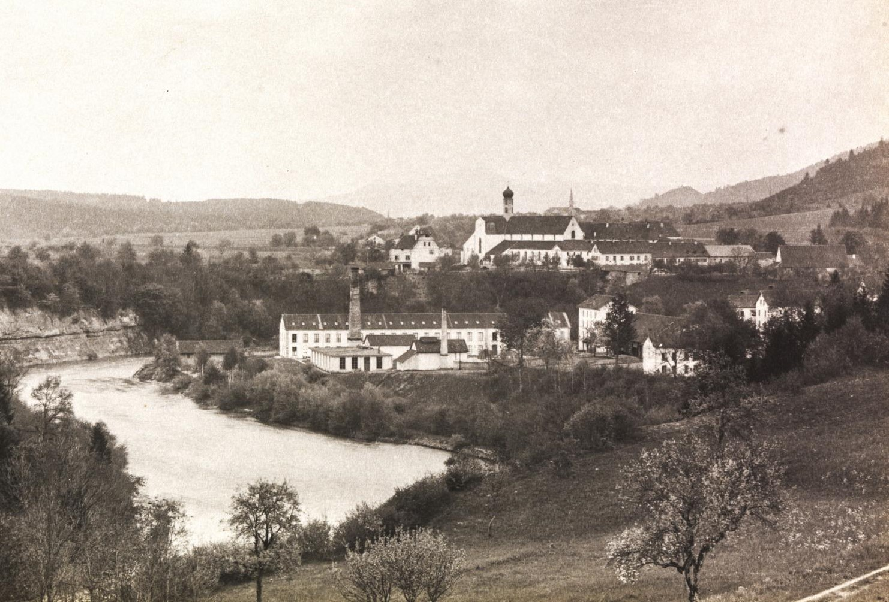
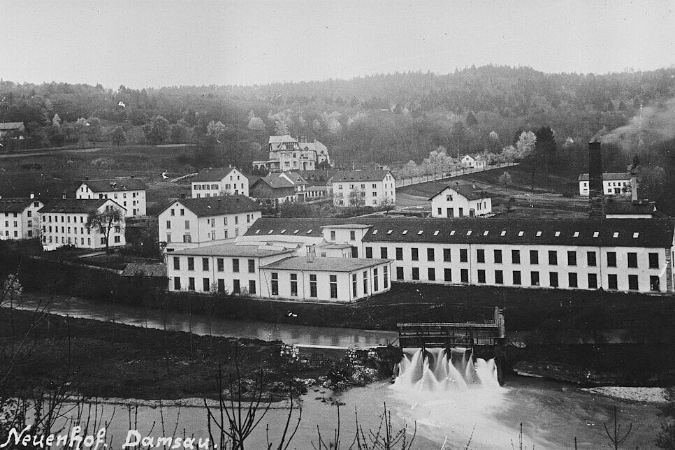
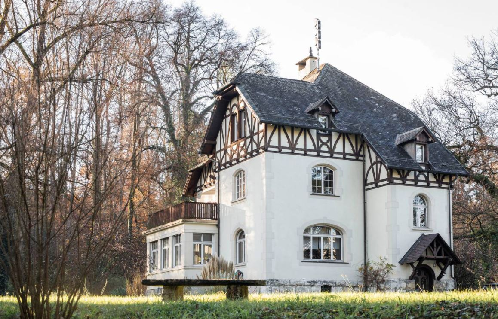
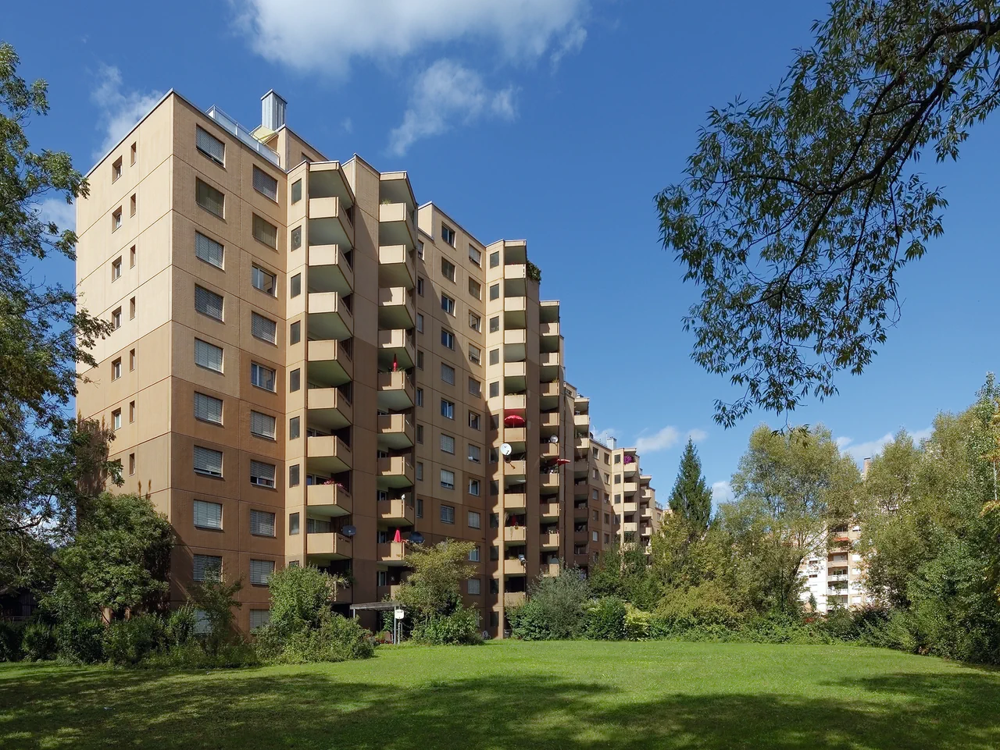
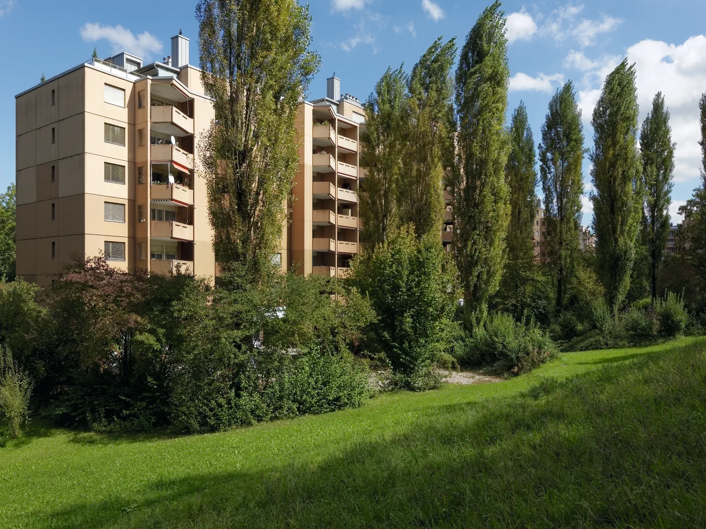
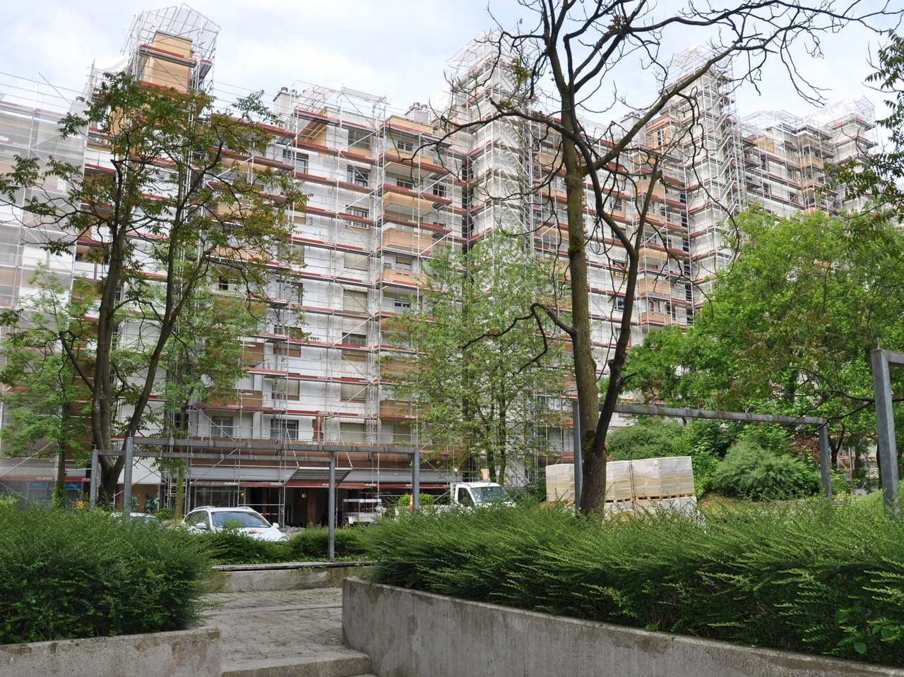
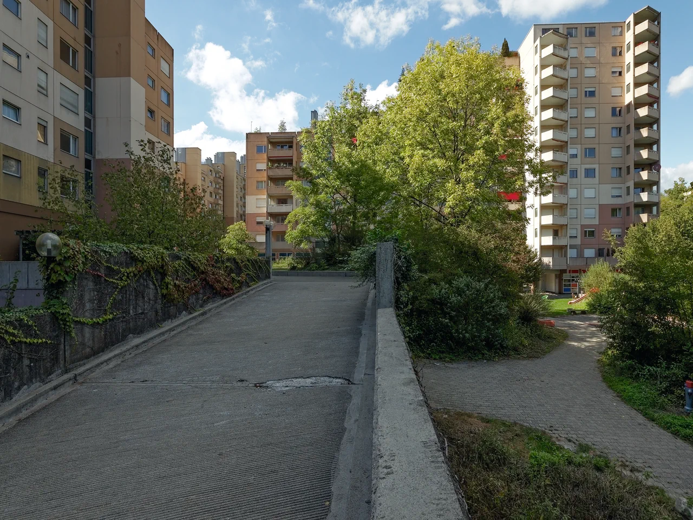
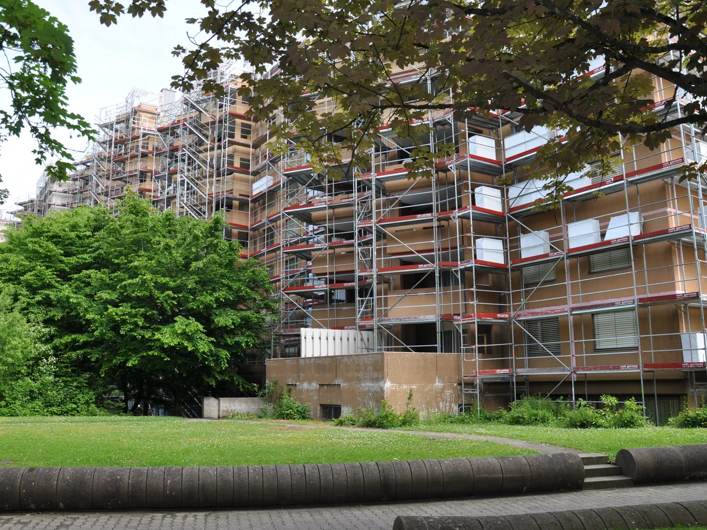
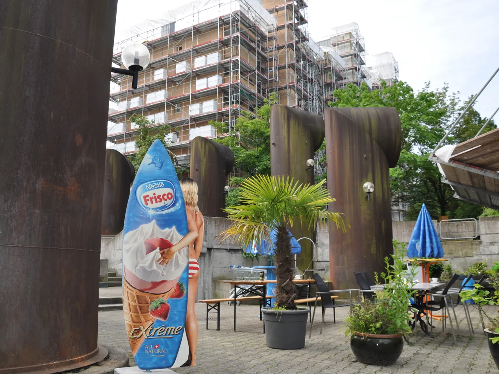
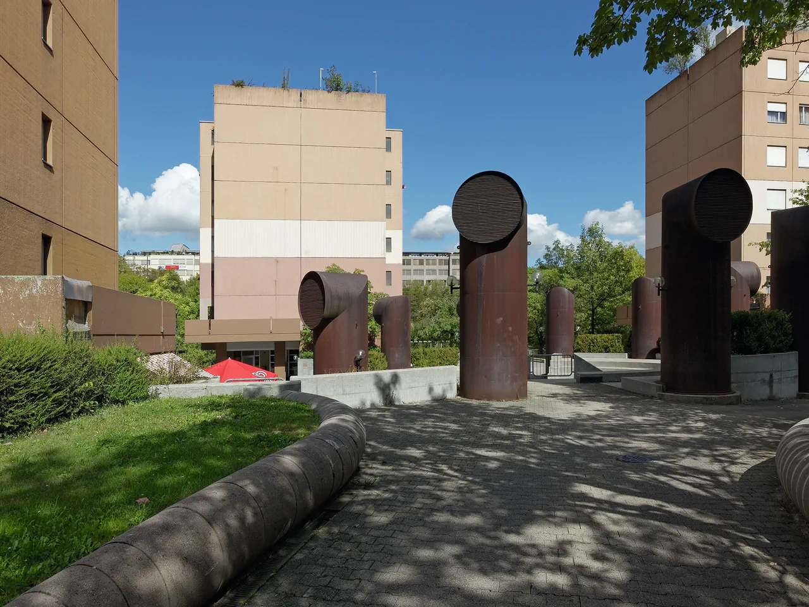
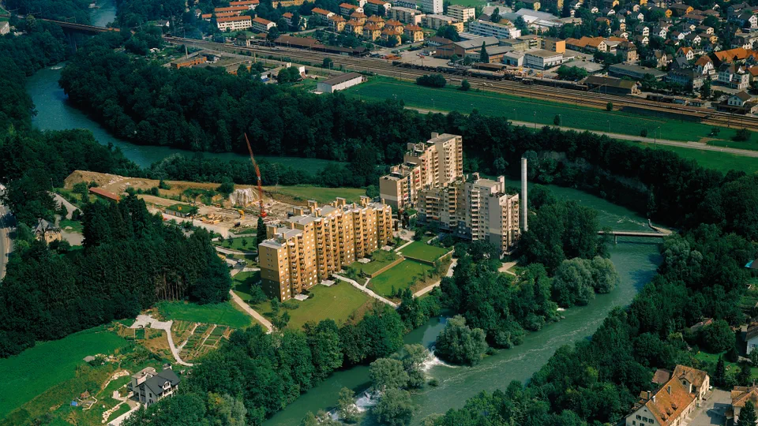
Vereine
Die Webermühle ist Heimat verschiedener Vereine und Interessengruppen – von Musik und Sport bis Nachbarschaftshilfe und Quartierfeste. Engagiere dich, gründe einen eigenen Verein oder lerne andere Bewohner*innen kennen.
Das Sommerfest in der Webermühle ist längst zu einer beliebten Tradition geworden und bringt Nachbar*innen aller Generationen zusammen. Einmal im Jahr verwandelt sich der Dorfplatz vor Haus 21 in einen lebendigen Treffpunkt voller Spiel, Musik und guter Laune.
Organisiert wird das Fest von SOFE Webi, unterstützt durch den Quartierverein Webermühle-Klosterrüti sowie viele freiwillige Helfer*innen aus dem Quartier. Neben einem vielfältigen kulinarischen Angebot gibt es ein buntes Programm für Kinder und Erwachsene – von Sportturnieren und Kreativ-Workshops über Kinderschminken bis hin zu Live-Musik und Tombola.
Das Sommerfest ist mehr als nur ein Fest: Es ist die perfekte Gelegenheit, neue Nachbarinnen kennenzulernen, Freundschaften zu vertiefen und gemeinsam unvergessliche Momente zu erleben. Für viele Bewohnerinnen ist es das Highlight des Jahres!
Mitmachen ist ausdrücklich erwünscht! Ob als Besucher*in, beim Kuchenbuffet, am Grill, als Sponsor oder mit einer eigenen kleinen Aktion – das Sommerfest lebt vom Engagement aller.
Kontakt für Fragen, Anregungen oder Unterstützung:
Der Persien Markt ist unser Quartierladen direkt in der Webermühle.
Hier findest du orientalische Spezialitäten, frisches Brot, Lebensmittel, Gewürze, Getränke, Süsswaren und vieles mehr – auch viele Artikel des täglichen Bedarfs.
Der Partyraum der Webermühle kann von allen Bewohner*innen für Feiern, Kindergeburtstage und Versammlungen genutzt werden. Neben einer kleinen Küche stehen Bluetooth-Lautsprecher sowie ein moderner Beamer zur Verfügung – ideal für Präsentationen oder Filmabende.
Unsere grosse Dachterrasse ist der perfekte Ort, um den Tag ausklingen zu lassen – mit Grill, Liegestühlen und tollem Blick ins Limmattal. Hier finden regelmässig Quartier-Events und offene Treffen statt.
Die Spielgruppe Zwergmühle ist eine privat geführte Institution und wird vom Quartierverein Webermühle getragen. Betreuung: Qualifizierte Spielgruppenleiterinnen betreuen Kinder in kleinen, konstanten Gruppen von max. 7–8 Kindern (ab 2,5 Jahren bis Kindergarteneintritt), jeweils Montag und Donnerstag 09:00–11:00 Uhr. Ort: Webermühle 23/EG, 5432 Neuenhof
Auch Kinder, die noch nicht ganz trocken sind, sind willkommen – einfach Windeln mitgeben und die Leitung informieren.